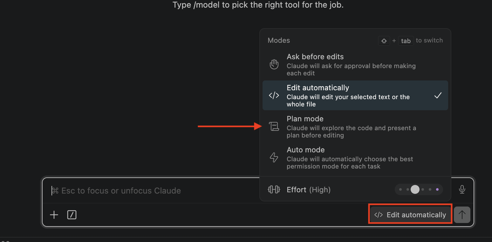

Automations: teach your own computer to run the repetitive parts of your day, so you don't have to.
Every morning you open the same handful of things and piece together "what actually needs me today." By the end of class, a small program on your own computer does that — at a time you set, before you sit down — and hands you one short brief of what matters.
Open your calendar, your task list, the news, your inbox — and reassemble the day from scratch. Fifteen scattered minutes before you've done anything.
One script reads all of it, decides what's worth your attention, and delivers a single triaged brief — done before you open your laptop.
Same muscle as always: you describe what you want, Claude writes and wires it, you check the result. Today we point it at your own repetitive work.
You already know what these are — you just do them by hand. Think about the little office jobs that eat your day and don't really need you, just your time. Each of these can run on its own:
Instead of scanning a hundred messages every morning, it reads them and tells you the few that actually need you today.
For the emails you answer the same way every time, it writes the reply in your words — you just read it and hit send.
A 20-message back-and-forth becomes three lines: what was decided, and what's next — without you reading all of it.
It remembers who never replied and sends the nudge, so you're not keeping a mental list of loose ends.
Notice what they share: each one reads something and makes a small judgment — what's urgent, how to reply, what matters. That "deciding" is the interesting part, and it's exactly what today's build does.
Here's what the script produces. It pulls from the places your day actually lives, and instead of dumping raw lists, it uses judgment to sort the signal from the noise — because reading everything is the chore we're removing.
Needs you today: the two calendar events that actually matter, the one task that's overdue, the client email worth a reply.
Worth a glance: a headline about your industry, three tasks that can wait.
Handled / noise: everything it decided you can safely ignore.
It's not a raw feed — it's a decision. Something read all of it and told you where to look first. That "what matters" call is the part only judgment can do, and it's why the script calls in Claude at exactly that step.
It reads, but never touches: it never sends, deletes, or moves anything in your accounts. It briefs you — you stay in control of every action.
This is the skill you'll reuse for anything you automate, and it's the only real work you do: describe the process the way you actually do it, step by step. Then you hand that map to Claude, and Claude builds the automation around it — you're not writing code, you're describing the routine. Take your morning:
You don't have to map it perfectly alone — Claude helps you map it. Describe your routine roughly and it fills in the steps you skipped, asks about the cases you forgot, and makes sure nothing's missing before it builds. The mapping is a conversation, not a test.
That's your morning, mapped. Hand it to Claude and it builds a script that does those steps for you — but first, one question sorts every step, and it changes how Claude builds each one. That's the next slide.
The same three-step process, filled in with real sources. Sort each step: most are deterministic — a fixed rule, one right answer — and only where a rule can't decide do you spend a judgment call. Watch how few need it:
Five of six steps are plain code — only "what matters" goes to Claude. Do everything you can deterministically, call Claude only where you can't. Two reasons: cost (fixed rules are free; Claude calls add up as the task grows) and consistency (fixed rules give the same answer every run; Claude may vary).
Each source is its own small, separate reader — so you connect whatever's relevant to you. Most are one copy-paste key. Pick about three to start so we get your briefing running today; add the rest whenever you want.
Your unread inbox — so the brief flags what's urgent.
Recent messages and mentions from a workspace you own.
Todoist, or similar — today's and overdue tasks.
A page or database you keep your work in.
Today's events, via a private link — no sign-in.
Yesterday's key numbers from what you built in Class 2.
These six are just a start — you can wire in almost anything. The one requirement: the tool has to offer a way in, either an API (a key you copy) or an MCP server (a ready-made connector). If a service has either, Claude can read from it. Everything stays read-only — it never sends or changes anything.
Why separate pieces? You can add a source without touching the others — and next class, these same readers become the tools your agent uses. Today you're quietly building its senses.
No website, no cloud service to rent. The script lives on your Mac (or PC), and your computer's own built-in scheduler runs it at the time you choose. That's the whole "without you" part — you set it once and it happens each morning.
Every Mac and PC ships with one — a quiet clock that runs programs at set times. Claude sets it up for you: "run this at 7am every day." On Mac it's launchd; on Windows, Task Scheduler. You never touch the details.
It's a laptop. If it's asleep or closed at 7am, that run is simply missed — the scheduler won't wake it. So we build in catch-up: every time the machine wakes, the script checks "did I already run today?" — if not, it runs now.
That catch-up check is a real step Claude writes into the build, not something the scheduler does for free — it's what makes a laptop automation you can actually trust. (Off all weekend is the one gap it can't cover — a good reason later work moves off your laptop.)
Same habit from Class 3. For a job with this many moving parts — several readers, a judgment step, delivery, a schedule — don't let Claude charge straight in. Switch to plan mode first: it thinks the whole thing through and hands you a plan to approve before a single file is written.
Press Shift+Tab to cycle the modes and stop on Plan mode. Describe what you want — Claude proposes, you approve or push back.
Build on the fly and Claude guesses at each step — more mistakes, more debugging. Plan first and it reasons about the whole job up front, so you catch a wrong turn while it's still words on a screen.

Plans come out technical by default — make Claude write them in plain English. Add "explain it like I'm not technical" to your request, or set that rule once in your CLAUDE.md so every plan is readable before you approve.
Claude doesn't remember yesterday's chat. Reference documents are plain files in your project that record how it works — what each reader does, how it's scheduled, why it's built that way. So you (or Claude in a fresh session) can read up and get the full picture — and you get most of them for free.
The plan from plan mode is a reference doc. Claude saves it and works against it to stay on task. No extra effort from you — approving the plan already created it.
When it's built, have Claude write an architecture doc: what each reader pulls, where the judgment step lives, how it's scheduled. This is the one doc worth asking for explicitly.
Why it matters here especially: next class you'll re-open this project and turn these readers into an agent's tools. A good architecture doc means Claude instantly knows how everything fits — instead of relearning your script from scratch.
Here's plan mode doing real work. Instead of feeding Claude the build one step at a time, describe the whole job once and it hands back a plan covering everything. Open Claude Code in a new folder for this project, switch to plan mode (Shift+Tab), and paste:
Start with three sources or fewer. Get the whole pipeline working end-to-end first — read, sort, deliver — then pile on more. It's the rule for anything you build: get the core working, then add. Ten sources at once means debugging ten things before you ever see it run.
Connecting your own accounts means handling API keys — a first for this series. Treat a key like a password: anyone who has it can read what it unlocks. So it never gets typed into the script and it never leaves your machine. The tool for that is a .env file.
.env isA plain, private file that holds your keys — one per line, like TODOIST_KEY=abc123. The script reads from it, so the keys live in one place, separate from the code, never pasted into the script itself.
The .env never goes to GitHub. Claude adds it to a .gitignore list so it's skipped on every push — because a key pushed to a public repo is a key the whole internet can grab.
Never paste a key into the Claude Code chat — you put it in the .env yourself. Have Claude create the empty .env and tell you exactly where each key goes; then you open the file and paste the real key in. Anything you type into the chat leaves your machine — the whole point is that the secret never does.
You approved the plan, so Claude works through it — you don't paste anything more. First it builds a reader for each source you picked: a small, separate function that fetches its thing and hands back clean results. Connecting almost always comes down to one of two easy moves:
Some sources hand you a secret web address to your own data — your Google Calendar's private link, for example. The script just fetches it. Copy the link once into your .env, done.
Most others (Todoist, Slack, your dashboard) give you an API token in their settings — one click to copy. Paste it into your .env and the reader uses it. No sign-in flow, no setup project.
Notice the pattern: each source is its own function — a clean reader you can test on its own, add to, and (next class) hand to an agent as a tool. Claude walks you through getting each link or key as it builds.
How does Claude know what to sort toward? The same way it always has — a CLAUDE.md, exactly like the one from Class 1. You keep it in the script's folder, and every morning Claude reads your instructions from it before it sorts — automatically, just like in a normal session. It's the one thing you truly shape here.
CLAUDE.md — what it should care aboutWrite what urgent means to you: "Flag anything from a client, or with a deadline today. Skip newsletters. Keep it to five lines." Change that file and the whole brief changes — no code touched. Tune it over the first few mornings until it thinks like you.
Run claude setup-token once — a one-year pass that lets the script use the Claude you already pay for. Free, no extra bill. (An API key is the other way — pennies a month; you don't need it today, but remember it: next class your agent gets its own.)
That CLAUDE.md is the seed of an agent. Today it's a short file doing one job — sorting your brief. Next class, a bigger version of that same file becomes an agent's whole personality: what it's for, what it's allowed to do, how it decides. You already know how to write one.
Two small pieces to finish. Claude wires both — you just approve when it asks.
The script saves the brief as a file and pops it open when it finishes — it's waiting on your screen when you sit down. No email, no accounts, nothing sent: it only reads your sources and writes to your own machine. (Later, send it to email or Slack instead — same brief, different doorway.)
Claude sets the built-in scheduler to run it every morning at your time — and writes in the catch-up check so a missed run (laptop asleep) fires on the next wake. Tell it the time; that's your only input.
The plan's last step: don't wait until tomorrow morning to find out if it works. Run the script by hand, in the room, and watch the brief pop open on your screen. Then confirm the schedule is set so it fires on its own from now on.
A real brief on your screen, and a schedule that runs tomorrow without you — that's a working automation, live on your own machine.
Something off — brief empty, didn't pop open, a reader errored? Tell Claude exactly what you saw; it diagnoses and re-runs. Same "describe it to Claude" habit from every class.
Your briefing is one routine, running on fixed rules. Once it works, you can add more fixed jobs to that same routine — still predictable, still on your schedule, still nothing sent without you. Two easy, useful additions:
For the emails you answer the same way, have it write the drafts — waiting for you to read and send. The hard part (the writing) is done; you keep the final click. It never sends on its own.
Have it turn the day's action items into actual tasks in Todoist — on your list, ready, before you sat down. One more fixed job added to the same morning run.
These are still the automation — fixed jobs you set once. It's not deciding for itself, it's doing the same things every morning. The leap to software that chooses what to do — and acts on your accounts — is a different thing entirely. That's Class 5.
An automation you rely on has one real danger: it stops working and you don't notice. A briefing that silently dies is worse than no briefing, because you've stopped checking by hand. So the last thing worth building is a script that's honest about its own health.
If a reader errors or Claude can't be reached, the script pops up a plain "your briefing broke — here's why" notification instead of just going dark. You always know it's alive.
It still shows a brief on a quiet day — "all clear, nothing urgent" — so nothing on your screen means something's wrong, never "all good." Ask Claude to build in both.
This is the difference between a toy and a tool: logging what it did, and never lying to you by staying silent. It's a small ask of Claude and it's what makes the thing trustworthy enough to actually rely on.
You built the machine with three starter readers. Your homework: add one source that's specific to your work — the one that would make the brief genuinely yours. You've got everything you need; this is you doing it on your own.
Same pattern as today: tell Claude the source, have it build a new separate reader, test it on its own, then add it to the brief. Plan mode, a copy-paste key in your .env, done.
No step-by-step this time. You know plan mode, reference docs, keys in a .env, and the reader pattern. Adding a source is the same move you made three times today — now do it once for something only you would think to track.
Next class, we give it a brain. Those separate readers you built become an agent's tools — and instead of running the same fixed steps every morning, the agent gets its own key, decides when to act and which tools to use, and starts making the judgment calls itself.
Automation was fixed rules doing a chore for you. Agents are judgment deciding what to do. Same tools you built today — a driver that can think. That's Class 5.